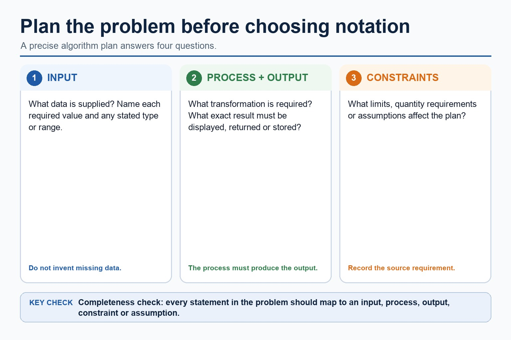
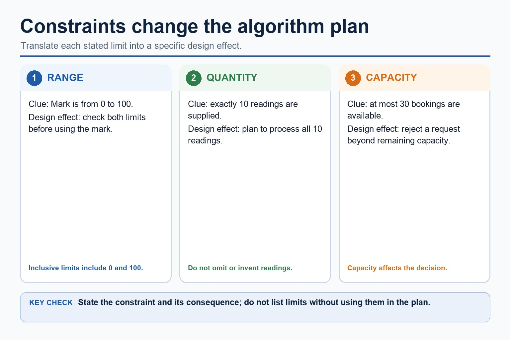

Before writing code, know what goes in, what comes out, and what is allowed to happen in between.
Paper 2 starts with algorithmic thinking. You will turn a word problem into clear inputs, outputs,
constraints, assumptions and ordered natural-language steps before choosing any notation.
Later lessons turn this natural-language plan into formal representations and executable structures.
Identifyinputs, outputs, constraints and assumptions in a problem statement
Designan IPOC plan and ordered natural-language steps
Checkthat every requirement is represented in the plan
Inputwhat data is provided?Processwhat steps transform the data?Outputwhat result is required?Constraintwhat limits, rules or stopping conditions apply?
An algorithm without an output is just a very organised walk in circles.
Why this matters
Most Paper 2 mistakes start during planning: unclear inputs, a missing output, an unstated assumption or a forgotten limit.
Common error
Do not choose notation before the problem is understood. A precise IPOC plan comes first.
Warm-up hook
The missing tea algorithm
Give instructions for making tea but remove one step. If the cup is empty, the kettle is not being difficult; the algorithm is.
Choose a fault to classify it as input, output, constraint or process.
Core idea
An algorithm is a precise method for solving a problem
An algorithm is a precise method for solving a problem

An algorithm is a precise method for solving a problem: source-grounded visual explanation.
Lesson fact: Identify what data is supplied and do not invent missing data.
Lesson fact: State the required transformation in clear natural language.
Lesson fact: State the exact result that must be displayed, returned or stored.
Lesson fact: Record limits, quantity requirements and supported assumptions.
Lesson fact: Check that every requirement maps to an input, process, output, constraint or assumption.
Problem model
Use IPOC before choosing a representation
InputList each value the algorithm needs. Decide type and range when possible.ProcessWrite the transformation in English first: calculate, compare, count, search, repeat.OutputState exactly what the algorithm must display, return or store.ConstraintsRecord limits, valid ranges, maximum repetitions and stopping conditions.AssumptionsState what is guaranteed if the question implies it, such as exactly 10 values.Completeness checkConfirm that every stated requirement appears in the plan.
Use IPOC before choosing a representation
Use IPOC before choosing a representation: source-grounded visual explanation.
Lesson fact: List each input and record its type or range when the problem supplies them.
Lesson fact: Write the required processing in ordered natural-language steps.
Lesson fact: State the exact required output.
Lesson fact: Record constraints and supported assumptions.
Lesson fact: Confirm completeness before choosing a representation.
Constraints
Constraints stop algorithms from wandering off
Constraint type
Example clue
Design effect
Range
mark is between 0 and 100
validate before processing
Quantity
exactly 10 readings are supplied
plan to process all 10 readings
Capacity
at most 30 bookings are available
reject requests that exceed remaining capacity
Output format
output highest value and its position
track both value and position
Constraints stop algorithms from wandering off

Constraints stop algorithms from wandering off: source-grounded visual explanation.
Lesson fact: A range of 0 to 100 requires both limits to be checked.
Lesson fact: Exactly 10 supplied readings means the plan must process all 10 readings.
Lesson fact: A capacity of 30 bookings means a request beyond the remaining capacity must be rejected.
Lesson fact: Each stated constraint must have a specific consequence in the plan.
Interactive problem classifier
Identify the design need
Choose a problem clue to see the main algorithm design need.
Interactive algorithm builder
Build an IPOC plan
Choose a problem to generate inputs, output and constraints.
Worked examples
From word problem to algorithm
Practice with instant checking
Algorithmic thinking vocabulary
Type concise answers. Use Show answer after committing to a response.
Mistake debugging
Fix weak algorithm design habits
Exam-style questions
Original Cambridge-style algorithm thinking questions with expandable MS
These questions target problem analysis, IPOC planning, assumptions and complete natural-language steps.
Extra practice
Meaningful identifiers and identifier tables
Identifiers should describe their data or role, be unambiguous and follow a consistent naming convention. Avoid unexplained single letters except conventional short counters.
An identifier table records each identifier's name, data type and purpose; scope and initial value may be added when useful. It is a design artefact, so entries must match the algorithm that follows.
Worked example: Ticket calculation
Use TicketCount: INTEGER, number of tickets requested; TicketPrice: REAL, price of one ticket; TotalCost: REAL, TicketCount * TicketPrice; IsMember: BOOLEAN, whether discount applies.
Targeted practice
1. Improve identifier x for the number of absent students.
Show answer
AbsentCount or NumberAbsent.
2. What three columns are essential here?
Show answer
Identifier, data type and purpose/description.
3. Why is Total misleading for several totals?
Show answer
It does not identify which quantity is totalled.
Exam-style question
4 marks
Construct identifier-table entries for a program storing a student's name, three separate test marks and calculated mean.
Show MS
B1 meaningful identifier and STRING type for name
B1 three clearly distinguished INTEGER/REAL identifiers for the separate marks
B1 meaningful REAL identifier for mean
B1 purposes clearly distinguish input values from calculated result
Summary
Algorithm design checklist
DefineInputs, outputs, constraints and assumptions before choosing notation.
DesignWrite clear natural-language processing steps in a logical order.
CheckMatch every requirement in the problem statement to part of the plan.
Homework
Clear tasks for consolidation
Task 1: IPOC cardsFor three small problems, write input, process, output, constraints and one assumption.Task 2: Requirement checkUnderline each requirement in two problem statements and show where it appears in the IPOC plan.Task 3: AssumptionsFor three plans, state one assumption and explain what information would be missing without it.